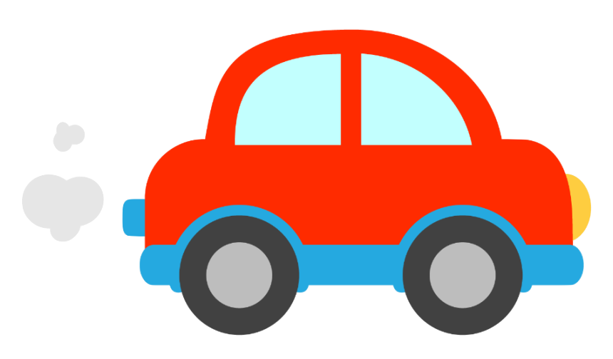

مرحباً، أنا تمرين CSS

![]()